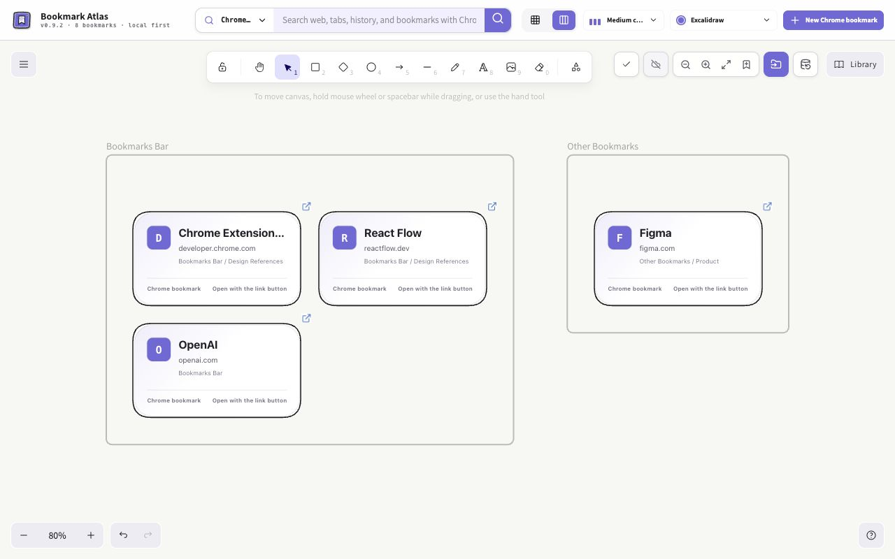
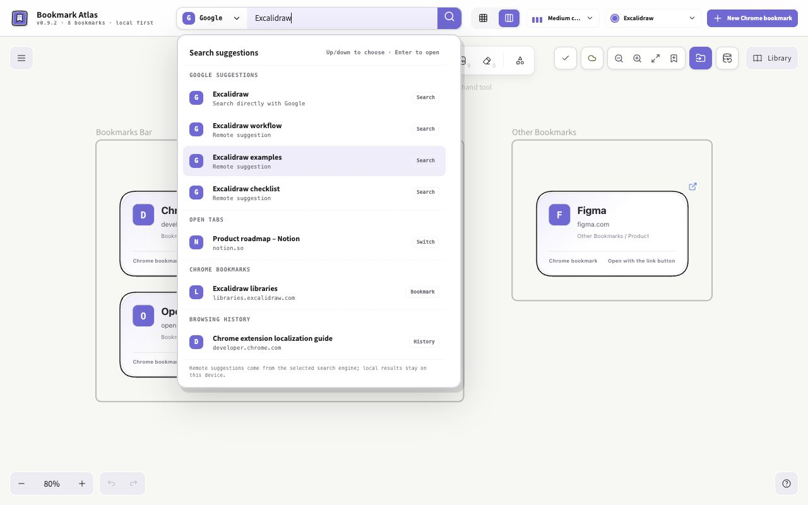

Your bookmarks.
Your canvas.
A little more space for the things you save. Bring your Chrome bookmarks onto a canvas, find what you need, and keep useful pages close.
Works with your existing bookmarks. AI is optional.

From saved link
to useful workspace.
Keep the browser bookmarks you already know. Choose how they appear on your canvas.
Read the getting started guideAdd
Click the extension icon on a page to save it, or import existing bookmarks onto your canvas.
Organize
Move cards into groups, add canvas notes, and draw connections with Excalidraw. Choose icon, compact, or detailed cards.
Open
Click a bookmark’s favicon to open it. Use search to reach bookmarks, open tabs, and browsing history from one place.

Find it.
Then get back to it.
Search browser context without sorting through every folder. Keep a reference page or video on the canvas when its website allows embedding.
Some websites block embeds. You can always open them in a regular tab.
About web embedsYour workspace stays close
The full canvas is stored locally. Eligible lightweight canvas data can sync through the same Chrome account when sync is enabled and quota allows. Chrome does not guarantee a delivery time.
Attachments stay on the device where you add them. Export a full JSON backup to keep a complete copy.
AI, only when you choose it
Connect your own compatible service and review selected bookmark metadata before sending it. Preview changes before applying them, then undo if needed. Saved credentials are encrypted locally and excluded from sync and backups; they are not an OS keychain. Your provider’s fees and policies apply.
Know what you’re installing.
Chrome Web Store: 0.9.5. Candidate 0.9.6 was submitted for review on 2026-10-21 and is not yet published.
Store availability can differ from the latest source code. Edge and Safari are not officially supported.
Release history and status给书签，一个画布。
把 Chrome 新标签页变成自己的视觉工作空间。保留原生书签，配合 Excalidraw 画布、统一搜索和网页嵌入，让保存的链接更好用。